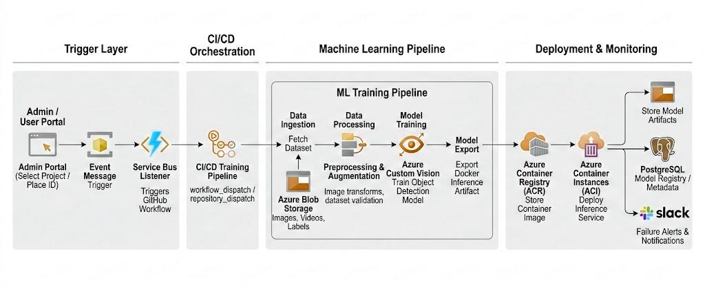

Automated Object Detection Training & Deployment Pipeline
A production-oriented MLOps pipeline built to operationalize the full lifecycle of computer vision models, developed as part of the ML infrastructure supporting Living Image, a platform that enables organizations to recognize real-world objects through a camera and deliver contextual digital experiences.
Living Image transforms museum visits into interactive digital experiences. By simply pointing a phone at an artifact, visitors trigger recognition that unlocks rich multimedia content. Therefore the accuracy of the underlying detection models are essential for the seamless experience.
AutoVision ModelOps is a production-oriented machine learning pipeline designed to automate the full lifecycle of object detection models from raw labeled data through training, containerized packaging and cloud deployment.
The pipeline was built as part of the ML infrastructure for Living Image, a platform that connects real-world objects such as museum artifacts, retail products and other physical points of interest to contextual digital content delivered through a camera interface. By simply pointing a phone at an object, users can instantly access rich multimedia information associated with it. The platform powers interactive exploration experiences across museums, retail spaces, and cultural venues by using visual AI to recognize objects and surface relevant digital content.
To support this at scale, the pipeline requires a unified, automated system running on Azure. It streamlines the process of retraining and deploying detection models across different locations or object collections, while maintaining consistent monitoring, logging, and release management. The system also enables an iterative fine-tuning loop. New video data collected from deployments is automatically processed to generate additional training samples, allowing the models to improve continuously over time with minimal manual intervention.
Computer vision models used for recognizing real-world objects must be updated frequently as environments evolve, new objects are added and datasets grow. Traditional manual workflows like collecting data, retraining, exporting artifacts and redeploying services create compounding operational challenges at scale.
Without a structured MLOps pipeline, maintaining reliable visual recognition systems becomes operationally expensive, slow to iterate on and difficult to scale across multiple client deployments.
The system follows a layered ModelOps architecture with coordinated components from process trigger and data ingestion at the edge of the pipeline to operational monitoring in production. Each layer is independently managed but communicates through well-defined interfaces, allowing individual components to be updated or replaced without disrupting the overall flow.

Fig. 1: End-to-end pipeline
AutoVision ModelOps establishes a scalable foundation for automated computer vision model operations, enabling the Living Image team to retrain, deploy and monitor object detection models with minimal manual intervention across any client location or object collection.
By operationalizing the ML lifecycle end-to-end, the system significantly reduces the overhead of maintaining visual recognition models, shortens iteration cycles and enforces consistent deployment practices directly supporting Living Image's ability to keep recognition models accurate and current as client environments evolve.